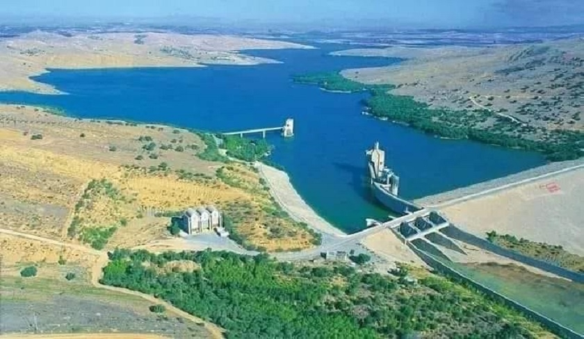
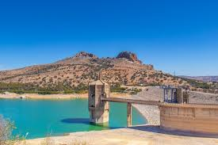
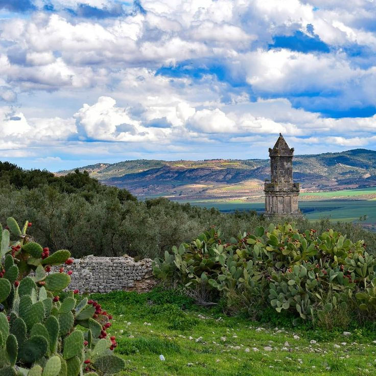

Perched on a hilltop overlooking the lush Medjerda Valley, Dougga stands as the most magnificent Roman archaeological site in North Africa. This UNESCO World Heritage site offers a rare glimpse into over seventeen centuries of history, blending Numidian, Punic, and Roman civilizations. As you wander through its remarkably preserved streets, the towering Capitol and the grand Theatre whisper stories of a glorious past. More than just ruins, Dougga is a living testament to ancient urban life and architectural brilliance. It remains an essential destination for history lovers seeking to discover Tunisia’s golden age. Exploring this ancient city is like stepping back in time, where every stone tells a legendary tale.


.jpg)
Bulla Regia is one of Tunisia’s most extraordinary archaeological sites, world-renowned for its unique underground Roman villas. While most Roman cities were built entirely above ground, the inhabitants of Bulla Regia constructed sunken ground floors to escape the intense summer heat of the Jendouba plains. This architectural ingenuity preserved some of the most beautiful mosaics in the world "in situ" (in their original place), such as the famous House of Amphitrite. Beyond the underground homes, the site features a grand theatre, a forum, and massive public baths, making it a critical pillar of the North-West’s cultural and historical heritage..


Often referred to as 'La Petite Dougga,' Aïn Tounga is a hidden archaeological treasure that captures the quiet beauty of Tunisia’s rural heritage. This ancient Roman site, known historically as Thignica, offers an intimate experience for travelers seeking to escape the crowds and wander through untouched ruins. Its standout features include a remarkably preserved Byzantine fortress and the majestic remains of its ancient temples and theatre. Surrounded by rolling green hills and olive groves, the site provides a serene atmosphere where history and nature coexist in perfect harmony. A visit to Aïn Tounga is a journey of discovery, revealing the architectural elegance of a forgotten Roman colony. It is truly the perfect companion stop for anyone exploring the grandeur of Dougga.



As you journey toward the ancient ruins of Dougga, the majestic Sidi Salem Dam emerges as a breathtaking blue oasis amidst the rolling hills of the Northwest. As Tunisia's largest dam, it is a true engineering marvel that plays a vital role in the country’s agriculture and water resources. The vast reservoir creates a stunning landscape where the deep blue water meets the lush greenery, offering a perfect spot for nature lovers and photographers. Beyond its practical importance, the area surrounding the dam provides a serene atmosphere for a refreshing break during your tour. The panoramic views of the Medjerda River and the shimmering lake are truly unforgettable. Combining a visit to this modern giant with the ancient wonders of Dougga creates a unique balance between human innovation and historical grandeur. It is an essential stop that showcases the natural beauty and resilience of the Tunisian heartland."



Beyond its magnificent stones, Dougga is nestled in a breathtaking natural landscape that changes with every season. Perched on a high cliff, the site offers a stunning panoramic view of the fertile Medjerda Valley, where golden wheat fields and silver olive groves stretch as far as the eye can see. In the spring, the surrounding hills turn into a vibrant green carpet, creating a peaceful backdrop for the ancient ruins. The site is famous for its centuries-old olive trees, some of which have stood guard over the city since Roman times. This harmony between the gray limestone monuments and the lush greenery makes Dougga one of the most picturesque locations in Tunisia. It is a place where you can breathe the fresh mountain air while losing yourself in the timeless beauty of the Tunisian countryside.
Dougga and Aïn Tounga are waiting for you.
Best visited during spring for the greenest views.
Need a local guide?
CONTACT US